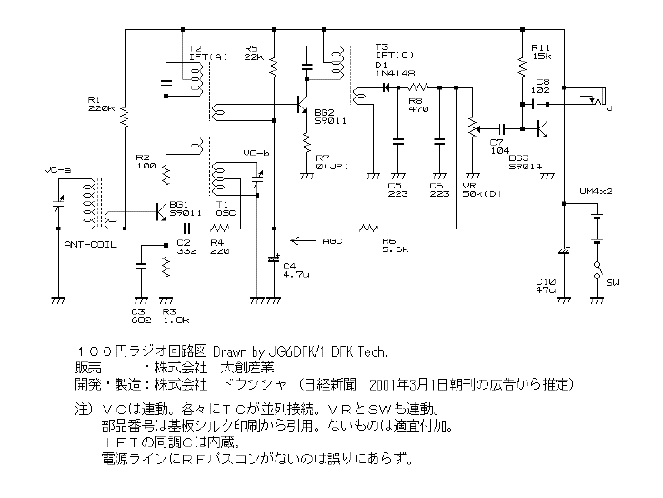
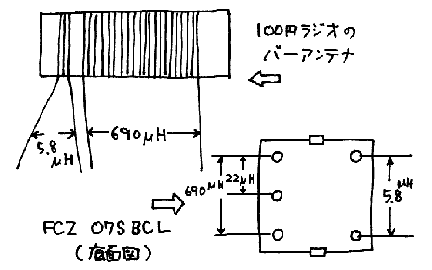
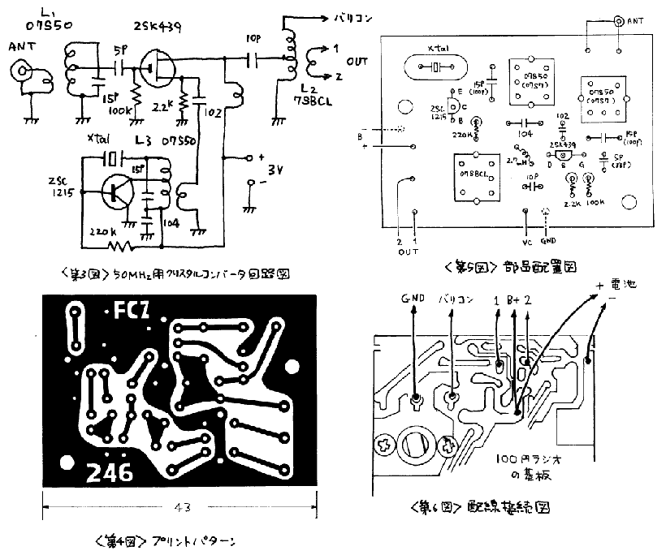
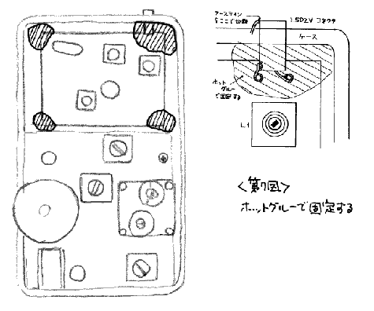
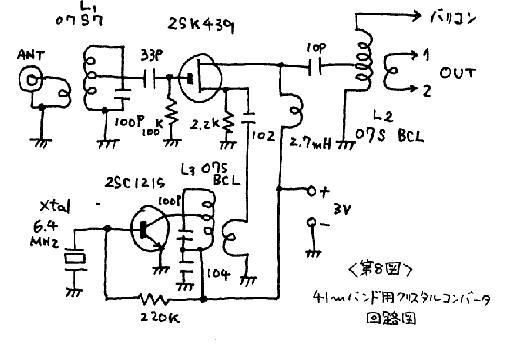
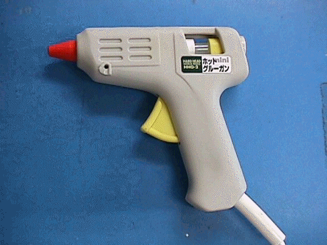
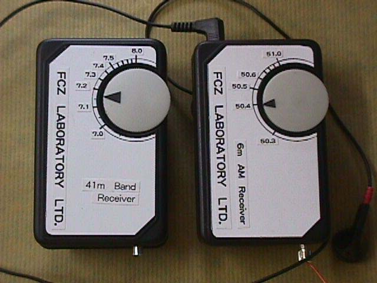
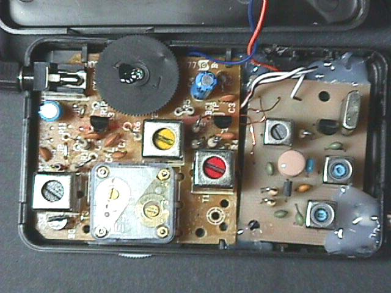

| ・戻る |
100円ショップ、ダイソ−から「100円ラジオ」 が発売されています。このラジオはトランジスタ を3石使ったスーパヘテロダイン方式で感度も「まあまあ」というコストパフォ−マンス上はたいした優れものです。 JA6DFK児玉さんがトレースした 100円ラジオの回路図を第１図に示します。
|  |
| 第1図 100円ラジオ回路図 (JG６DFK/１作図) |
この寺子屋シリーズ#246はその100円ラジオを親受信機として50MHzを聞くためのクリスタル コンバ−タです。
回路の構成としてはいろいろと考えられますが、１００円ラジオには極力手を加えないのが得策であると 考え、入力部分をクリスタルコンバータとすることにしました。
聞きたい周波数(50MHz)を現存する受信機(100円ラジオ)の受信周波数 (540~1600kHz)に変換する外部装置で、局部発振に水晶発振器を使ったものを言います。
100円ラジオの受信範囲は大体 540~1,600kHz
ですからクリスタルコンバータの局部発振周波数が49.5~49.9MHzで50MHz帯のAM周波数を聞くことが出来ます。 49.5MHzの水晶を
使った場合は、100円ラジオの同調ダイアルの下の端で50.04MHzが、上の端で51.1MHz付近が受信できる勘定になるのですが、100円ラジオ
の同調ダイアルは周波数が高くなるにつれて目盛りがつまってきますから、50MHz帯でAMの電波が良く出ている50.5~50.8MHzを受信するには
ダイアル操作がしにくいという欠陥が出てきます。
この問題を解決するには、49.7MHzから49.9MHz付近の水晶を使用するのが良いことが判ります。
局部発振を決めて50MHz帯の信号をBC波に落とすところまでは解決しました。 しかしこれですべ て解決したということではありません。 次なる問題は、クリスタルコンバータの出力を直接100円ラジオに注入した場合、バーアンテナから入るBC放送波 による混信をもろに受けてしまうということです。
この混信を防止するにはバーアンテナを取り去ってしまうしか方法はありません。そしてその代わりにな るコイルが必要になります。 FCZ研究所ではそのためのコイル、「φ7S-BCL」を製作しました。 捲き数等は第2図に示します。
|  |
|
|
第３図に50MHz受信用クリスタルコンバータの回路図を示します。 そして第４図にプリント基板の パターン、第５図に部品配置図、第６図に配線接続図を示します。
|  |
(1) まず最初にプリント基板をとめているビス1本を抜き、基板をケースからはずします。
(2) バーアンテナをプリント基板に固定している部分をハンダごてで融かし、取り外します。 このとき、バーアンテナから基板への配線がどこについていたかを しっかり記憶しておいてください。 その後このリード線もはずします。
(3) ケースと蓋から、電池をとめるためのリムをニッパーで切り取ります。
(4)アンテナコネクタの穴(4mm)と、電源用の穴(1mmX2)をあけます。
(5) クリスタルコンバータの基板上の配線をします。
(6) クリスタルコンバータと親受信機との間の配線をします。
|  |
(7)電源を仮配線し、アンテナを取り付けます。
(1)アンテナと電源(単4電池2本)をつなぎイヤホンから「サ−」または「ザー」というノイズが出 ていることを確認してください。
(2)50MHzの送信機からAMの信号を出し、親受信機のバリコンをまわして受信できれば局部発振 は正常です。---→(5)
(3)もし親受信機のボリュームを上げてもほとんど何も聞こえないときは局部発振がとまってしまって いることが考えられますからRFプローブを使い、L２を調整して発振を確かめてください。
(4)RFプローブで発振していることが確認出来てもなお、何も聞こえないときは発振回路が5倍オー バトーンで発振していること(82MHz台の)も考えられます。 発振コイル(07S50)のコアの位置は大体「面位置」です。
(5)アンテナコイルL1と、出力コイルL3 を感度が最高になるように調整します。
(6) 親受信機のコイル類には手をつけないでください。
(1)一旦電源を電池ケースの所ではずします。 アンテナもプラグをはずしてください。
(2)親受信機の基板を元の位置に戻し固定します。
(3)アンテナ端子をケースの穴に通し、クリスタルコンバータの基板を所定の位置に置きます。
(4)クリスタルコンバータの基板及びアンテナ端子をホットグル−(*)を使い固定します。ホットグ
ル−がないときはビス・ナットでとめてもかまいません。(第７図参照)
(*)ホットグル−についてはこのページの最後を御覧下さい。
(5)電池ケースを両面テープで固定してから配線を改めて行います。 これで完了です。
アンテナ端子は1.5D2V用になっていますから取りあえず1,5D2Vを取り付け、その先をBNCま たはMのコネクタとしてアンテナに接続してください。
(1)100円ラジオの電源スイッチは(-)側に入っています。 (+)側は常に電池とつながってい
ます。 と、いってプラスアースでもありません。クリスタルコンバータのアースは電源のアースに直接取り付けてはいけません。必ず回路のアースに取り付け
るようにしてください。
(2)100円ラジオで使用しているトランジスタ、S9011,S9014 のピンコネクションは一般的な、左からECBではなく、EBC です。
(3)クリスタルコンバータで使用する2SK439のピンコネクションは一般的な、左からDSGではなく、反対のGSDです。
基本的な回路は#246と同じですから違うところだけ説明しておきます。
(1) 受信目的が41m(メートル)バンドですから局部発振周波数は6.4MHz付近になります。
(2) アンテナコイルと発振コイルの２つのコイルが「07S7 」に、各々の同調コンデンサが100pFに変更になります。
(3) 発振回路が水晶の一端が発振コイルにつながれていたものを切断してアースに落とします。
(4) 回路図を第8図に示します。
|  |
(1) 水晶を8.5MHz付近に変更する。
(2) L1とL２を「07S9」に変更する。
(3) 同調コンデンサを１００pFに変更する。
の変更で31mバンドの国際放送を聞くことが出来ます。(キットはありません)
最近、日曜大工の店にいきますと「ホットグルー」とか、「ホットボンド」というピストル型の道具を 売っています。
|  |
接着させたいところにホットメルトを押し出し、冷えれば固定出来ますから気軽にいろいろなものを接 着固定することが出来ます。
価格はスペアのホットメルトを入れても1000円程度で購入することが出来ますからなかなか便利な 道具と言えましょう。
100円ラジオを改造してダイアル面を作りなおしてみました。写真 で御紹介します。


#246,247のキットで大きなアンテナをつけるとBCの混入が ラグチュウル−ムで問題になりました。そのときの会話をここで再現しておきます。 ごらんください。